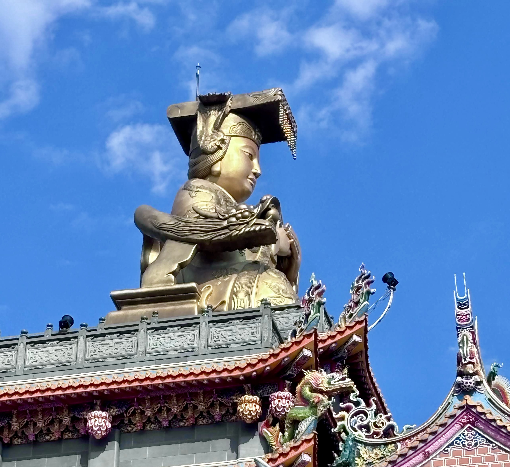
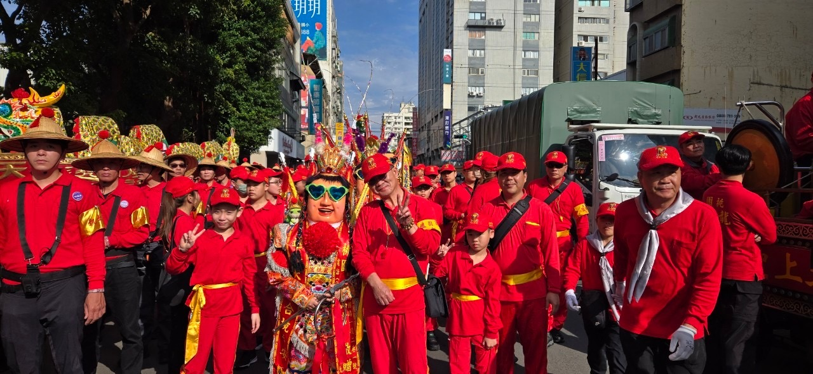

桃園龍德宮神將團是桃園龍德宮的重要陣頭團隊，以威武的神將表演聞名，伴隨四媽祖遶境與廟會活動，展現台灣傳統民俗文化的精髓。神將團成員肩負使命，用腳一步一步踏實前進，傳承信仰與責任。
「每一次請神將，請著的不是重量，而是一種責任。」這是龍德宮神將團的精神寫照。
桃園龍德宮主祀天上聖母（四媽祖），神將團作為宮廟的護衛陣頭，參與每年南巡祈安遶境等重大活動。神將團成員透過嚴格訓練，請著神將護法，保佑信眾平安。
龍德宮神將團強調「用腳一步一步的踏著，願的是圓滿達成使命」，體現虔誠與堅持的精神。無論是遶境或廟會表演，都以磅礡氣勢震撼人心。
神將團主要參與桃園龍德宮的年度南巡祈安遶境（9天8夜徒步進香）、中壇元帥聖誕慶典，以及各種廟會與文化活動。表演時，神將高大威猛，配合鑼鼓，帶來視覺與聽覺的震撼。
近年來，神將團也活躍於全國遶境與離島巡安，傳遞媽祖慈悲與台灣民俗之美。
